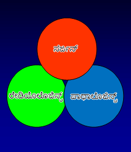
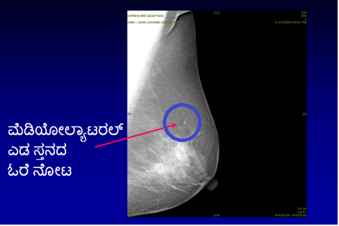

ಸ್ತನ

ಸ್ತನ
ಮೊಲೆತೊಟ್ಟು

ಒಂಬತ್ತು ಬಾರಿ ವಿಂಬಲ್ಡನ್ ಸಿಂಗಲ್ಸ್ ಚಾಂಪಿಯನ್ ಆಗಿರುವ ಕ್ರೀಡಾಪಟು ಮಾರ್ಟಿನಾ ನವ್ರಾಟಿಲೋವಾಗೆ ಸ್ತನ ಕ್ಯಾನ್ಸರ್ನ ಆರಂಬಿಕ ಹಂತವಾದ ಡಕ್ಟಲ್ ಕಾರ್ಸಿನೋಮಾ ಇನ್ ಸಿಟು (ಡಿಸಿಐಎಸ್) ಕಾಣಿಸಿಕೊಂಡಿತ್ತು. 2010ರಲ್ಲಿ ಆಕೆ 53 ವರ್ಷದವರಾಗಿದ್ದರು ಮತ್ತು ನಾಲ್ಕು ವರ್ಷಗಳವರೆಗೆ ವಾರ್ಷಿಕ ಸ್ಕ್ರೀನಿಂಗ್ ಮ್ಯಾಮೋಗ್ರಾಮ್ ಮಾಡಿಸಿರಲಿಲ್ಲ. 40ನೇ ವಯಸ್ಸಿನಿಂದ ವರ್ಷಕ್ಕೊಮ್ಮೆ ಮ್ಯಾಮೋಗ್ರಾಮ್ ಸ್ಕ್ರೀನಿಂಗ್ ಮಾಡುವುದನ್ನು ಶಿಫಾರಸು ಮಾಡಲಾಗಿದ್ದರೂ, ಆಕೆ ತನ್ನ ಆರೋಗ್ಯಕರ ಜೀವನಶೈಲಿ ಮತ್ತು ಸ್ಥಿತಿಗತಿಯನ್ನು ಮುಂದಿಟ್ಟು ಈ ಸಂಕೀರ್ಣ ಸ್ಥಿತಿಯನ್ನು ಎದುರಿಸುವಂತಾಗಿತ್ತು.
"ನಾನು ನಾಲ್ಕು ವರ್ಷಗಳವರೆಗೆ ಮ್ಯಾಮೋಗ್ರಾಮ್ ಮಾಡಿಸಿಕೊಂಡಿರಲಿಲ್ಲ." ಎಂದು 2010ರಲ್ಲಿ ಆಕೆ ಹೇಳಿಕೊಂಡಿದ್ದಾರೆ. ಪ್ರತಿಯೊಬ್ಬರೂ ಬ್ಯುಸಿಯಾಗಿರುತ್ತಾರೆ. ಆದರೆ ನೆವ ಹೇಳಬಾರದು. ನಾನು ಸರಿಯಾದ ಆಹಾರ ಸೇವಿಸುತ್ತಿದ್ದೇನೆ. ಉತ್ತಮ ಆರೋಗ್ಯ ನಿರ್ವಹಿಸಿದ್ದೇನೆ. ಆದರೂ ನನಗೆ ಹೀಗಾಯಿತು. ಒಂದು ವರ್ಷ ಕಳೆದಿದ್ದರೆ ನನಗೆ ದೊಡ್ಡ ಸಮಸ್ಯೆಯೇ ಆಗಬಹುದಿತ್ತು." ಅದೃಷ್ಟವಶಾತ್ ಕ್ಯಾನ್ಸರ್ ಅನ್ನು ಆರಂಭದ ಹಂತದಲ್ಲೇ ಗುರುತಿಸಲಾಯಿತು. ಆಕೆ ವಿಶಾಲ ಸ್ಥಳೀಯ ಕತ್ತರಿಸುವಿಕೆ (ಲಂಪೆಕ್ಟಮಿ) ಚಿಕಿತ್ಸೆಗೆ ಒಳಗಾದರು ಮತ್ತು 2010ರ ಮೇಯಲ್ಲಿ ರೇಡಿಯೇಶನ್ ಥೆರಪಿಯನ್ನು ಪೂರೈಸಿದರು.
ಜನಪ್ರಿಯ ಗಾಯಕಿ ಮತ್ತು ಒಂಬತ್ತು ಬಾರಿ ಗ್ರಾಮಿ ಪುರಸ್ಕೃತೆ ಶೆರಿಲ್ ಕ್ರೋವೆ ಮತ್ತು ಇನ್ನೊಬ್ಬ ಹಾಲಿವುಡ್ನ ಜನಪ್ರಿಯ ನಟಿ ಕ್ರಿಸ್ಟೀನ್ ಆಪಲಗೇಟ್ ಆರಂಭಿಕ ಇಂಪಾಲ್ಪಬಲ್ ಸ್ತನ ಕ್ಯಾನ್ಸರ್ಗೆ ತುತ್ತಾಗಿದ್ದಾರೆ.
ಡಿಸಿಐಎಸ್ ಎಂದರೇನು?
ಸ್ತನವನ್ನು ನಾಳಗಳು, ಲಾಬ್ಯೂಲ್ಗಳು ಮತ್ತು ಕೊಬ್ಬಿನ ಅಂಗಾಂಶಗಳಿಂದ ಮಾಡಲ್ಪಟ್ಟಿದೆ. ಡಕ್ಟಲ್ ಕಾರ್ಸಿನೋಮಾ ಇನ್ ಸಿಟು (ಡಿಸಿಐಎಸ್) ಎಂಬುದು ಸ್ತನ ಕ್ಯಾನ್ಸರ್ನ ಆರಂಭಿಕ ಹಂತವಾಗಿದ್ದು, ನಾಳದ (ಮೊಲೆತೊಟ್ಟಿಗೆ ಹಾಲನ್ನು ಹೊತ್ತೊಯ್ಯುವುದು) ಒಳಗೆ ಕ್ಯಾನ್ಸರ್ ಕೋಶಗಳು ಇರುತ್ತವೆ. ಇದು ಕ್ಯಾನ್ಸರ್ ಪೂರ್ವ ಸ್ಥಿತಿಯಾಗಿದ್ದು, ಹಾಲಿನ ನಾಳಗಳಿಂದ ಹೊರಗೆ, ಸ್ತನ ಕೋಶದ ಸಾಮಾನ್ಯ ಭಾಗಕ್ಕೆ ಕ್ಯಾನ್ಸರ್ ಕೋಶಗಳು ಹರಡುವ ಸಾಮರ್ಥ್ಯವನ್ನುಹೊಂದಿರುವುದಿಲ್ಲ.
ಡಿಸಿಐಎಸ್ ಎಷ್ಟು ಸಹಜವಾದದ್ದು?
ಅಮೆರಿಕನ್ ಕ್ಯಾನ್ಸರ್ ಸೊಸೈಟಿ ಪ್ರಕಾರ ಅಮೆರಿಕದಲ್ಲಿ ಡಿಸಿಐಎಸ್ನ 60,000 ಪ್ರಕರಣಗಳನ್ನು ಪ್ರತಿ ವರ್ಷ ಪತ್ತೆ ಮಾಡಲಾಗಿದೆ (ಸ್ತನ ಕ್ಯಾನ್ಸರ್ನ 5 ಹೊಸ ಕೇಸ್ಗಳಲ್ಲಿ 1ಅನ್ನು ಪ್ರತಿ ವರ್ಷ ಕಂಡುಕೊಳ್ಳಲಾಗಿದೆ). ಭಾರತದಲ್ಲಿ, ಭಾರತೀಯ ವೈದ್ಯಕೀಯ ಸಂಶೋಧನಾ ಕೌನ್ಸಿಲ್ (ಐಸಿಎಂಆರ್) ಪ್ರಕಾರ, ಸ್ತನ ಕ್ಯಾನ್ಸರ್ನ 150,000 ಹೊಸ ಪ್ರಕರಣಗಳನ್ನು ಪ್ರತಿ ವರ್ಷ ಪತ್ತೆ ಮಾಡಲಾಗಿದೆ. ಆದರೆ, ಡಿಸಿಐಎಸ್ನ ನಿಖರ ಅಂಕಿಅಂಶಗಳ ಘಟನೆ ಕಂಡುಬಂದಿಲ್ಲ. ಸಂಘಟಿತ ಸ್ಕ್ರೀನಿಂಗ್ ಕಾರ್ಯಕ್ರಮದ ಅರಿವು ಮತ್ತು ಇಲ್ಲದಿರುವಿಕೆಯಿಂದ ಶೇ. 60ರಷ್ಟು ಸ್ತನ ಕ್ಯಾನ್ಸರ್ ಪ್ರಕರಣಗಳು ನಮ್ಮ ದೇಶದಲ್ಲಿ ಸುಧಾರಿತ ಸ್ಥಿತಿಯಲ್ಲಿವೆ ಮತ್ತು ಪತ್ತೆ ಮಾಡಿದ ಒಂದು ವರ್ಷದಲ್ಲಿ ಇದಕ್ಕೆ ತುತ್ತಾಗುತ್ತಿದ್ದಾರೆ. ಭಾರತದಲ್ಲಿ ಪ್ರತಿ ಹತ್ತು ನಿಮಿಷಕ್ಕೆ ಒಬ್ಬ ಮಹಿಳೆ ಸ್ತನ ಕ್ಯಾನ್ಸರ್ಗೆ ತುತ್ತಾಗುತ್ತಿದ್ದಾರೆ.
ಡಿಸಿಐಎಸ್ ಹೇಗೆ ಇರುತ್ತದೆ?
ಡಿಸಿಐಎಸ್ ಸಾಮಾನ್ಯವಾಗಿ ಯಾವುದೇ ಗುಣಲಕ್ಷಣಗಳನ್ನು ಹೊಂದಿರುವುದಿಲ್ಲ. ಹೆಚ್ಚಿನ ಪ್ರಮಾಣದ ಡಿಸಿಐಎಸ್ (ಶೇ. 80ಕ್ಕಿಂತ ಹೆಚ್ಚು) ಅನ್ನು ಸ್ಕ್ರೀನಿಂಗ್ ಮ್ಯಾಮೋಗ್ರಫಿಯಿಂದ ಗುರುತಿಸಲಾಗುತ್ತದೆ. ಮೊಲೆತೊಟ್ಟಿನಿಂದ ರಕ್ತ ಹರಿಯುವಿಕೆ, ಮೊಲೆತೊಟ್ಟಿನ ಸುತ್ತ ದದ್ದುಗಳು (ಪಾಗೆಟ್ ರೋಗ ಎಂದು ಕರೆಯಲಾಗುವ) ಅಥವಾ ಅಪರೂಪಕ್ಕೆ ಸ್ತನದಲ್ಲಿ ಗಂಟುಗಳ ಮೂಲಕ ಡಿಸಿಐಎಸ್ ಕಾಣಿಸಿಕೊಳ್ಳಬಹುದು.
ಡಿಸಿಐಎಸ್ ಅನ್ನು ಹೇಗೆ ಪತ್ತೆ ಮಾಡಲಾಗುತ್ತದೆ?
ಸಾಮಾನ್ಯ ಸ್ತನ ತಪಾಸಣೆ ವಿಶ್ಲೇಷಣೆಯ ಮೂಲಕ ಡಿಸಿಐಎಸ್ ಅನ್ನು ಪತ್ತೆ ಮಾಡಲಾಗುತ್ತದೆ. ತಜ್ಞರಿಂದ ಕ್ಲಿನಿಕಲ್ ಸ್ತನ ತಪಾಸಣೆ, ಸ್ತನ ಇಮೇಜಿಂಗ್ (ಮ್ಯಾಮೋಗ್ರಾಮ್, ಸ್ತನದ ಎಕ್ಸ್ರೇ ಮತ್ತು ಸ್ತನದ ಅಲ್ಟ್ರಾಸೌಂಡ್ ಸ್ಕ್ಯಾನ್) ಮತ್ತು ನೀಡಲ್ ಕೋರ್ ಬಯಾಪ್ಸಿ (ಟ್ರಿಪಲ್ ವಿಶ್ಲೇಷಣೆ)ಯನ್ನು ವಿಶ್ಲೇಷಣೆಯು ಒಳಗೊಂಡಿರುತ್ತದೆ.

ಡಿಸಿಐಎಸ್ನಲ್ಲಿ ಅಪರೂಪಕ್ಕೆ ಗಂಟು ಕಾಣಿಸಿಕೊಳ್ಳುತ್ತದೆ. ಕ್ಲಿನಿಕಲ್ ಸ್ತನ ತಪಾಸಣೆಯು ಸಾಮಾನ್ಯವಾಗಿ ಸಹಾಯಕವಲ್ಲ. ಸ್ತನ ತಪಾಸಣೆಗೆ ಸ್ವರ್ಣ ಮಾಪಕವಾದ ಮ್ಯಾಮೋಗ್ರಾಮ್ ಸಾಮಾನ್ಯವಾಗಿ ಅಸಹಜವಾಗಿ ಕಾಣುವ (ಪ್ಲಿಯೋಮಾರ್ಫಿಕ್) ಮ್ಯಾಕ್ರೋ ಲೆಕ್ಕಾಚಾರಗಳ ಗೊಂಚಲನ್ನು ಸಾಮಾನ್ಯವಾಗಿ ತೋರಿಸುತ್ತದೆ. ಇದು ಮ್ಯಾಮೋಗ್ರಾಮ್ನಲ್ಲಿ ಬಿಳಿ ಚುಕ್ಕೆಗಳಾಗಿ ಕಾಣಿಸುತ್ತದೆ. ಎಲ್ಲ ಮ್ಯಾಕ್ರೋಕ್ಯಾಲ್ಸಿಫಿಕೇಶನ್ಗಳೂ ಕ್ಯಾನ್ಸರ್ಕಾರಕ ಎಂದು ಹೇಳಲಾಗದು. ಡಿಸಿಐಎಸ್ ಅನ್ನು ಗುರುತಿಸಲು ಮಲ್ಟಿಡಿಸಿಪ್ಲಿನರಿ ತಂಡವು ಕುಶಲ ಮತ್ತು ನಿಪುಣವಾಗಿರಬೇಕು.



ಅಂತಿಮವಾಗಿ, ಪತ್ತೆ ಮಾಡಲು ಕೋರ್ ನೀಡಲ್ ಬಯಾಪ್ಸಿ ಮೂಲಕ ಒಂದು ಅಂಗಾಂಶವನ್ನು ತೆಗೆಯಲಾಗುತ್ತದೆ ಮತ್ತು ಇದನ್ನು ಸ್ಥಳೀಯ ಅನಾಸ್ಥೇಸಿಯಾ ಮೂಲಕ ಸ್ಟೀರಿಯೋಟಾಕ್ಟಿಕ್ ಮಾರ್ಗದರ್ಶನ (ಮ್ಯಾಮೋಗ್ರಾಮ್ ಸಹಾಯದಿಂದ)ದ ಅಡಿಯಲ್ಲಿ ಮಾಡಲಾಗುತ್ತದೆ. ನೀಡಲ್ ಬಯಾಪ್ಸಿಯ ಇತರ ವಿಧಾನಗಳೆಂದರೆ, ಫೈನ್ ನೀಡಲ್ ಆಸ್ಪಿರೇಶನ್ ಬಯಾಪ್ಸಿಯಾಗಿದೆ (ಎಫ್ಎನ್ಎಸಿ). ಇದನ್ನು ಸಾಮಾನ್ಯವಾಗಿ ಪಲ್ಪಬಲ್ ಸ್ತನ ಗಂಟುಗಳಿಗೆ ಬಳಸಲಾಗುತ್ತದೆ. ಡಿಸಿಐಎಸ್ನಿಂದ ಇದು ತಪ್ಪುದಾರಿಗೆಳೆಯಬಹುದು ಮತ್ತು ಇದರಿಂದ ಒಳಭಾಗದ ಕ್ಯಾನ್ಸರ್ ಅನ್ನು ಗುರುತಿಸಲು ಸಾಧ್ಯವಾಗದಿರಬಹುದು (ಸ್ತನ ಅಂಗಾಂಶಕ್ಕೆ ಹರಡುವ ಕ್ಯಾನ್ಸರ್). ನೀಡಲ್ ಕೋರ್ ಬಯಾಪ್ಸಿ ಈವರೆಗೆ ನಿಖರವಾಗಿದೆ

ಕೆಲವು ಸಂದರ್ಭದಲ್ಲಿ ಮೈಕ್ರೋಕಾಲ್ಸಿಫಿಕೇಶನ್ ಸ್ಥಳೀಯಗೊಳಿಸಲು ಫೈನ್ ಗೈಡ್ ಬಳಸಿ ಸಾಮಾನ್ಯ ಅನಸ್ಥೇಸಿಯಾದಲ್ಲಿ ಕೊರೆಯುವಿಕೆ ಬಯಾಪ್ಸಿ ಅಗತ್ಯವಿರುತ್ತದೆ. ಮೈಕ್ರೋಕಾಲ್ಸಿಫಿಕೇಶನ್ ತುಂಬಾ ಸಣ್ಣದಾಗಿದ್ದಾಗ ಇದನ್ನು ಮಾಡಲಾಗುತ್ತದೆ ಮತ್ತು ನೀಡಲ್ ಕೋರ್ ಬಯಾಪ್ಸಿ ಮೂಲಕ ತಪಾಸಣೆ ಮಾಡಲಾಗುತ್ತದೆ.
ಡಿಸಿಐಎಸ್ ಅನ್ನು ಹೇಗೆ ಶ್ರೇಣೀಕರಿಸಲಾಗುತ್ತದೆ ಮತ್ತು ಅದರ ಗಮನಾರ್ಹತೆ ಏನು?
ಮೈಕ್ರೋಸ್ಕೋಪ್ ಅಡಿಯಲ್ಲಿ ಕೋಶದ ಗೋಚರತೆಯನ್ನು ಆಧರಿಸಿ ಮತ್ತು ಈ ಕೋಶಗಳು ಎಷ್ಟು ಶೀಘ್ರವಾಗ ವಿಭಜನೆಗೊಳ್ಳುತ್ತವೆ ಎಂಬುದನ್ನು ಆಧರಿಸಿ ಡಿಸಿಐಎಸ್ ಶ್ರೇಣಿಕರಿಸಲಾಗುತ್ತದೆ. ಇದನ್ನು ಅಧಿಕ, ಮಧ್ಯಂತರ ಗ್ರೇಡ್ ಮತ್ತು ಕೆಳ ಗ್ರೇಡ್ ಡಿಸಿಐಎಸ್ ಎಂದು ಶ್ರೇಣೀಕರಿಸಲಾಗುತ್ತದೆ. ಡಿಸಿಐಎಸ್ಗೆ ಚಿಕಿತ್ಸೆ ನೀಡದೇ ಇದ್ದರೆ, ನಾಳದಿಂದ ಸುತ್ತಲಿನ ಸ್ತನ ಅಂಗಾಂಶಕ್ಕೆ ಹರಿಯುವ ಸಾಮರ್ಥ್ಯವನ್ನು ನಿಧಾನವಾಗಿ ಕ್ಯಾನ್ಸರ್ ಕೋಶಗಳು ಪಡೆಯುತ್ತವೆ. ಇದನ್ನು ಇನ್ವೇಸಿವ್ ಬ್ರೆಸ್ಟ್ ಕ್ಯಾನ್ಸರ್ ಎಂದು ಕರೆಯಲಾಗುತ್ತದೆ. ಅಧಿಕ ಶ್ರೇಣಿಯ ಡಿಸಿಐಎಸ್ಗಿಂತ ಕಡಿಮೆ ಶ್ರೇಣಿಯ ಡಿಸಿಐಎಸ್ಗೆ ಇನ್ವೇಸಿವ್ ಸ್ತನ ಕ್ಯಾನ್ಸರ್ ಆಗಿ ಬೆಳವಣಿಗೆ ಕಾಣುವ ಸಾಧ್ಯತೆ ಕಡಿಮೆ ಇರುತ್ತದೆ.
ಡಿಸಿಐಎಸ್ ಅನ್ನು ಹೇಗೆ ಚಿಕಿತ್ಸಿಸಲಾಗುತ್ತದೆ?
ಇನ್ವೇಸಿವ್ ಸ್ತನ ಕ್ಯಾನ್ಸರ್ ಬೆಳವಣಿಗೆ ಕಾಣುವುದನ್ನು ತಡೆಯಲು ಎಲ್ಲ ಡಿಸಿಐಎಸ್ ಅನ್ನು ತೆಗೆಯುವುದು ಚಿಕಿತ್ಸೆಯ ಉದ್ದೇಶವಾಗಿದೆ. ನಾಳದಲ್ಲಿ ಡಿಸಿಐಎಸ್ನ ವಿಸ್ತರಣೆ ಮತ್ತು ಡಿಸಿಐಎಸ್ನ ಶ್ರೇಣಿಯಂತಹ ಅಂಶಗಳ ಆಧಾರದಲ್ಲಿ ಚಿಕಿತ್ಸೆ ನಡೆಸಲಾಗುತ್ತದೆ.
ಎ. ಶಸ್ತ್ರಚಿಕಿತ್ಸೆ ಸ್ತನ ರಕ್ಷಣೆ ಶಸ್ತ್ರಚಿಕಿತ್ಸೆಸ್ತನ ಶಸ್ತ್ರಚಿಕಿತ್ಸೆಯು ಡಿಸಿಐಎಸ್ ಚಿಕಿತ್ಸೆಯ ಆರಂಭಿಕ ಹಂತವಾಗಿದೆ. ಡಿಸಿಐಎಸ್ ವ್ಯಾಪಿಸಿದರೆ ಮತ್ತು ಸ್ತನದ ಒಂದು ಪ್ರದೇಶಕ್ಕೆ ಸೀಮಿತವಾಗಿದ್ದರೆ, ಸ್ತನ ರಕ್ಷಣೆ ಶಸ್ತ್ರಚಿಕಿತ್ಸೆಯನ್ನು ನಡೆಸಬಹುದಾಗಿದೆ. ಕ್ಯಾನ್ಸರ್ ಅನ್ನು ರೋಗಿ ಅಥವಾ ವೈದ್ಯರು ಅರಿವು ಹೊಂದಲು ಸಾಧ್ಯವಾಗದಿರುವುದರಿಂದ, ಸ್ಥಳೀಯ ಅನಸ್ಥೇಸಿಯಾ ಮೂಲಕ ಸೂಕ್ಷ್ಮಯ ಗೈಡ್ ವೈರ್ ಅನ್ನು ಸ್ತನಕ್ಕೆ ಸೇರಿಸಲಾಗುತ್ತದೆ ಮತ್ತು ಸ್ತನದ ಅಸಹಜ ಪ್ರದೇಶವನ್ನು ಗುರುತಿಸಲಾಗುತ್ತದೆ. ಇದು ಮಾರ್ಗದರ್ಶಿಯಾಗಿ ಕೆಲಸ ಮಾಡುತ್ತದೆ ಮತ್ತು ಡಿಸಿಐಎಸ್ ಪ್ರದೇಶವನ್ನು ತೆಗೆಯಲು ಸರ್ಜನ್ಗೆ ಸಾಧ್ಯವಾಗುತ್ತದೆ ಮತತು ಅವವರು ಸಾಮಾನ್ಯ ಸ್ತನ ಅಂಗಾಂಶದ ಸುತ್ತಲಿನ ಪ್ರದೇಶವನ್ನು ತೆಗೆಯುತ್ತಾರೆ (ಗೈಡ್ ವೈರ್ ನೆರವಿನ ವಿಶಾಲ ಸ್ಥಳೀಯ ಕೊರೆಯುವಿಕೆ)
ಸ್ತನ ರಕ್ಷಣೆ ಶಸ್ತ್ರಚಿಕಿತ್ಸೆ -
ವಿಶಾಲ ಸ್ಥಳೀಯ ಕತ್ತರಿಸುವಿಕೆ


ಸ್ತನದ ದೊಡ್ಡ ಭಾಗವನ್ನು ಡಿಸಿಐಎಸ್ ವ್ಯಾಪಿಸಿದರೆ ; ಅಥವಾ ಸ್ತನ ರಕ್ಷಣೆ ಶಸ್ತ್ರಚಿಕಿತ್ಸೆಯನ್ನು ಬಳಸಿ ಡಿಸಿಐಎಸ್ನ ಸುತ್ತಮ ಸಾಮಾನ್ಯ ಅಂಗಾಂಶದ ಸ್ಪಷ್ಟ ಪ್ರದೇಶವನ್ನು ಪಡೆಯಲು ಸಾಧ್ಯವಾಗದಿದ್ದರೆ ಅಥವಾ ಸ್ತನದಲ್ಲಿ ಡಿಸಿಐಎಸ್ನ ಒಂದಕ್ಕಿಂತ ಹೆಚ್ಚು ಪ್ರದೇಶ (ಮಲ್ಟಿಫೋಕಲ್ ಡಿಸಿಐಎಸ್) ಇದ್ದರೆ ಮಾಸ್ಟೆಕ್ಟಮಿಯು ಶಸ್ತ್ರಚಿಕಿತ್ಸೆ ಆಯ್ಕೆಯಾಗಿರುತ್ತದೆ. ಮಾಸ್ಟೆಕ್ಟಮಿಯನ್ನು ಶಿಫಾರಸು ಮಾಡಿದರೆ, ಪ್ರಾಥಮಿಕ ಶಸ್ತ್ರಚಿಕಿತ್ಸೆಯ ಸಮಯದಲ್ಲೇ ತಕ್ಷಣವೇ ಸ್ತನ ಪುನಾರಚನೆ ಆಯ್ಕೆಯನ್ನು ರೋಗಿಗೆ ನೀಡಬೇಕು. ಇದರಿಂದ ಸ್ತನ ತೆಗೆಯುವುದರಿಂದ ಉಂಟಾಗುವ ಮನೋವೈಜ್ಞಾನಿಕ ಮತ್ತು ಭಾವನಾತ್ಮಕ ಸಮಸ್ಯೆಯನ್ನು ಕಡಿಮೆ ಮಾಡಬಹುದಾಗಿದೆ. ನಾಳದಿಂದ ಡಿಸಿಐಎಸ್ನಲ್ಲಿ ಸ್ತನದ ಅಂಗಾಂಶಕ್ಕೆ ಹರಡದಿದ್ದರೆ ಸಾಮಾನ್ಯವಾಗಿ ಕಂಕುಳಲ್ಲಿನ ಲಿಂಫ್ ಗ್ಲಾಂಡ್ಗಳನ್ನು ತೆಗೆಯಬೇಕಿಲ್ಲ.
ಸ್ತನ ರಕ್ಷಣೆ ಶಸ್ತ್ರಚಿಕಿತ್ಸೆ -
ಮಾಸ್ಟೆಕ್ಟಮಿ

ಕೃಪೆ: ಸ್ತನ ಕ್ಯಾನ್ಸರ್ ಆರೈಕೆ, ಯುಕೆ


ಶಸ್ತ್ರಚಿಕಿತ್ಸೆಯ ನಂತರ ಮುಂದಿನ ಚಿಕಿತ್ಸೆ ಅಗತ್ಯವಿದೆ. ಇದು ಅಡ್ಜುವೆಂಟ್ ಥೆರಪಿಯಾಗಿದೆ ಮತ್ತು ಇದರಲ್ಲಿ ರೇಡಿಯೋಥೆರಪಿ ಮತ್ತು ಹಾರ್ಮೋನ್ ಥೆರಪಿಯನ್ನೂ ಒಳಗೊಂಡಿದೆ.
ರೇಡಿಯೋಥೆರಪಿಸ್ತನ ರಕ್ಷಣೆ ಶಸ್ತ್ರಚಿಕಿತ್ಸೆಯನ್ನು ನಡೆಸಿದರೆ, ಬಾಹ್ಯ ಬೀಮ್ ರೇಡಿಯೋಥೆರಪಿಯ ಆರು ವಾರಗಳ ಅಡ್ಜುವೆಂಟ್ ಚಿಕಿತ್ಸೆಯನ್ನು ನಡೆಸಲಾಗುತ್ತದೆ. ಮಾಸ್ಟೆಕ್ಟಮಿಯನ್ನು ರೋಗಿಗೆ ಮಾಡಿದ್ದರೆ, ರೇಡಿಯೋ ಥೆರಪಿ ಅಗತ್ಯವಿಲ್ಲ.
ಹಾರ್ಮೋನ್ ಥೆರಪಿಡಿಸಿಐಎಸ್ನ ವಿಧವು ಹಾರ್ಮೋನ ಆಸ್ಟ್ರೋಜೆನ್ ಬೆಳವಣಿಗೆಯದ್ದಾಗಿದ್ದರೆ (ಆಸ್ಟ್ರೋಜೆನ್ ರಿಸೆಪ್ಟರ್ ಪಾಸಿಟಿವ್), ಟಾಮೋಕ್ಸಿಫೆನ್ ಹಾರ್ಮೋನ್ ತೆರಪಿ ಅಗತ್ಯವಿರಬಹುದು. ಡಿಸಿಐಎಸ್ನ ಶ್ರೇಣಿಯಂತಹ ಇತರ ಅಂಶಗಳನ್ನು ಇದು ಆಧರಿಸಿರುತ್ತದೆ.
ಕೀಮೋಥೆರಪಿಡಿಸಿಐಎಸ್ ಚಿಕಿತ್ಸೆಗೆ ಕೀಮೋಥೆರಪಿ ಅಗತ್ಯವಿಲ್ಲ
ಡಿಸಿಐಎಸ್ ಜೀವಕ್ಕೆ ಅಪಾಯವಾಗಿದೆಯೇ ಮತ್ತು ಡಿಸಿಐಎಸ್ನಿಂದ ಮುನ್ಸೂಚನೆ ಏನು?
ಸಂ. ಹಾಲಿನ ನಾಳದಿಂದ ಸಾಮಾನ್ಯ ಸುತ್ತಲಿನ ಸ್ತನ ಅಂಗಾಂಶಕ್ಕೆ ಕ್ಯಾನ್ಸರ್ ಹರಡದಿದ್ದರೆ, ಡಿಸಿಐಎಸ್ ಜೀವಕ್ಕೆ ಭೀತಿ ಉಂಟು ಮಾಡುವಂಥದ್ದಲ್ಲ. ಡಿಸಿಐಎಸ್ ಹೊಂದಿರುವ ಮಹಿಳೆಯರ ದೀರ್ಘಾವಧಿ ಜೀವಿತಾವಧಿಯು ಅತ್ಯುತ್ತಮವಾಗಿರುತ್ತದೆ ಮತ್ತು ಶೇ. 100 ಕ್ಕೆ ಸಮೀಪ (ಶೇ. 98 - ಶೇ. 99) ಆಗಿರುತ್ತದೆ.